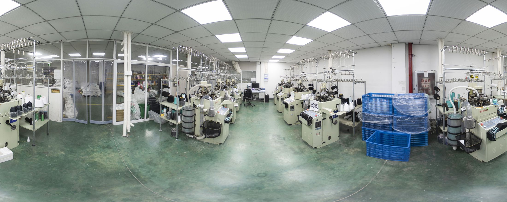
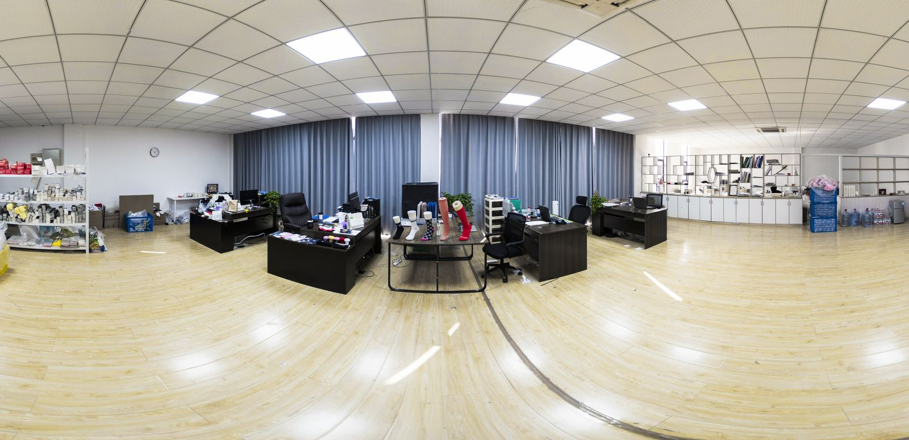

Factory
Knitting, linking, grip application and packing happen in the same building in Yuanhua Town, Jiaxing. That is why a change request does not take two weeks to travel.

Capacity
Single-cylinder and double-cylinder machines running 144N to 200N, which covers everything from 200-needle photographic jacquard down to chunky 144-needle wool blends.
Linking is hand-finished for sport socks and flat-lock for compression styles. Grip is applied on site, so a grip order does not wait on a subcontractor.
Ask for a video walkthrough
Quality
Needle inspection after knitting catches dropped stitches before linking. Finished pairs are then checked for size, colour consistency and grip adhesion before packing.
Third-party inspection (SGS, BV, TUV) can be arranged at your cost before shipment.
Certificates
We list the holder for every document. Two are ours, two belong to our yarn and dyeing suppliers — we do not present supplier certificates as our own. Each card opens the PDF: the OEKO-TEX Standard 100 certificate and test report for our yarn and dyeing, plus our own CE / GPSD declaration.
Book a live video call — we will walk the knitting line, the linking table and the packing area while you watch.